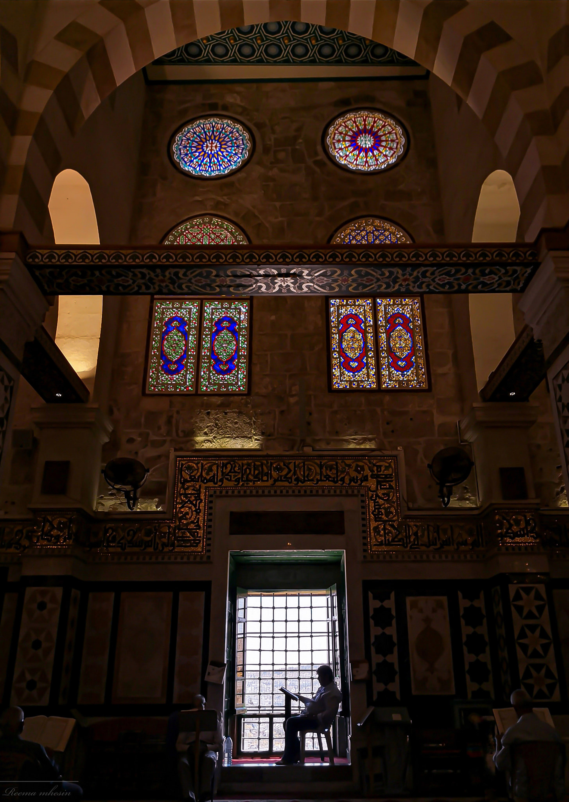

I do not have many scientific backgrounds, except that the school was my gateway to knowledge. My knowledge did not go beyond what is given in textbooks. After I graduated from school, my educational background became wider, as I moved to a larger community. As for my academic background, I graduated from my primary school with honors and high school grades with good grades, which qualified me to enter An-Najah National University to major in Computer Science.
